Las clases, son características creadas para poder modificar la vista de un ejercicio y poder corregir la posición de distintos elementos.
Cajas list o table:
Estas clases van escritas en la caja del ejercicio en la fila de Attributes, en la segunda columna. Todas las clases van precedidas del texto: – class: –.
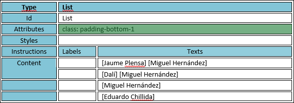
bullets verde: crea unos bullets de color verde en cada línea.
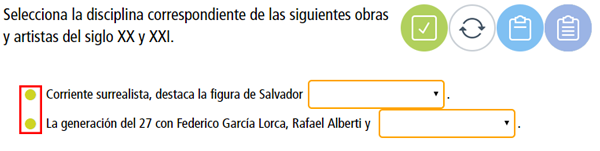
padding-bottom-1 / padding-bottom-3: da un espacio entre líneas. Se puede usar para dar espacio entre líneas cuando se usa una dropdown o un drag and drop. En las cajas de tabla, se usa para dar separación entre imágenes en distintas filas de la tabla. Funciona en ejercicios de linking-lines, en horizontal.
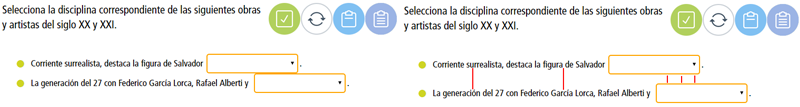
line-height_3: da un espacio vertical dentro de una misma línea. Es decir aumenta la distancia del interlineado. Se usa para separar dropdowns o drag and drops que se encuentren en una misma línea.
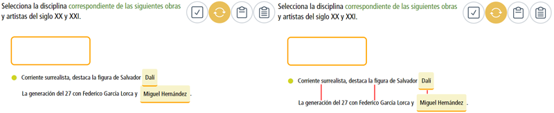
margin-left-2 / margin-left-5: separa el contenido hacia la derecha, dando una separación a la izq.
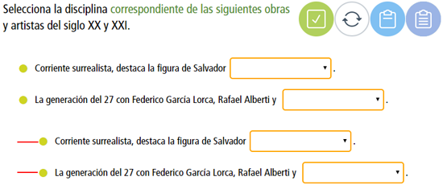
v-columns-2 / v-columns-3: hace que las filas se agrupen en dos o tres columnas. Crea los grupos de cada columna de forma vertical. Agrupa el número medio de filas y crea dos o tres columnas.
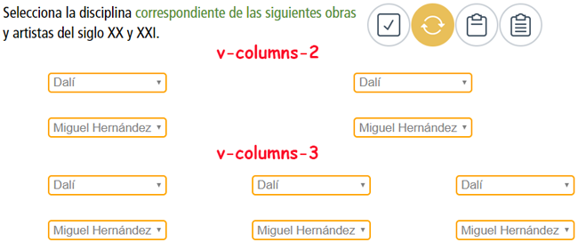
h-2-columns: hace que las filas se agrupen en dos columnas. Crea los grupos de cada columna de horizontal. Agrupa el número medio de filas y crea dos columnas.
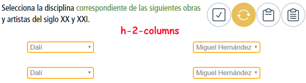
Caja table:
Estas clases sólo funcionan en cajas de tabla, las cuales llevan una tabla dentro del cuerpo del ejercicio.
table-green: crea una tabla con la primera fila de color verde.
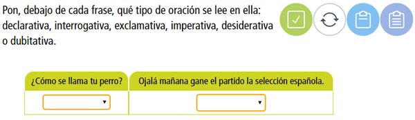
table-green-vertical: crea una tabla con la primera columna de color verde.
table-green-oculto: crea una tabla con la primera caja de la primera fila/columna oculta.
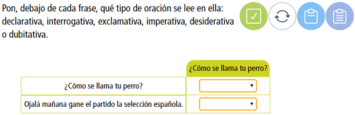
table-green-oculto-vertical: crea una tabla con la primera fila y columna de color verde.
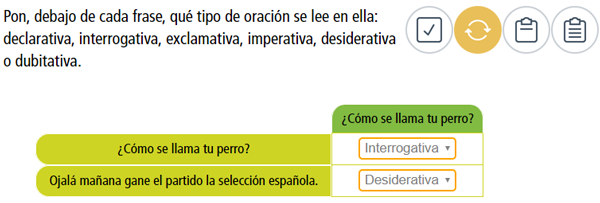
table-width-8-span: ajusta el tamaño de las columnas al espacio de las incognitas.
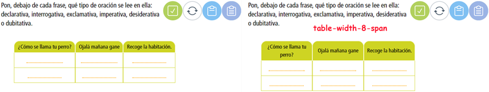
padding-right-1 / padding-right-3: crea un espacio a la derecha de un elemento. Sirve para separar elementos dentro de una tabla. Funciona en ejercicios de linking-lines, en horizontal.
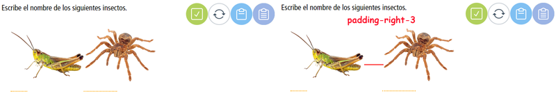
span-center: centra la incognita con respecto a la imagen.
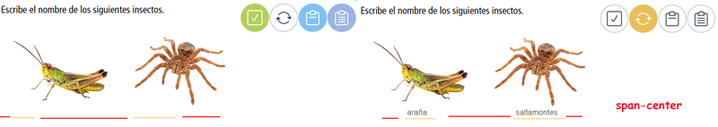
Cajas especiales
Tokenbank: esta caja puede utilizar la siguiente clase: max-width_100-token, hace que la caja que contiene los drags se haga más ancha.
Wordpool: esta caja puede utilizar la siguiente clase: max-width_100, hace que la caja que contiene las palabras se haga más ancha.
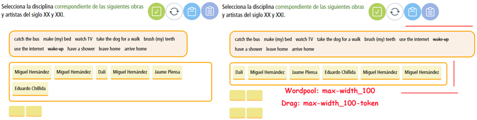
Las cajas de tipo facsímil, text-block, crossword y wordsearch normalmente no llevan clases y no funcionan todas.
Nomenclatura especifica en la creación de ejercicios:
Estas clases se escriben en la zona de desarrollo del ejercicio.
[] - Para crear una incógnita usamos los corchetes, exceptuando los ejercicios que llevan un tipo de manuscrito concreto, como puede ser un crucigrama. La tipología de ejercicios que usan esta nomenclatura son: Keying, Dropdown, Checkbox, Click, Drag and drop y Reorder.
[opción 1|opción 2] - Dentro de los ejercicios que usan los corchetes para crear la incógnita, todos aquellos que son de seleccionar una opción u otra, llevan una línea vertical, | creada con altgr + 1, que separa las distintas opciones.
Otro uso de la línea vertical se da en los ejercicios de tipo keying. En este tipo de ejercicios se usa para dar distintas opciones en una misma incógnita. Se puede dar el caso en el que queramos permitir al alumno que una misma palabra se escriba de formas diferentes, por ejemplo [Caballo|caballo| CABALLO]. Al escribirlo de esta manera, da igual como se escriba la palabra, siempre dará una de estas opciones como válida.
[texto*] - En los ejercicios que tienen distitas opciones, para marcar cual es la correcta se utiliza el asterisco *.
[texto+] - En los ejercicios en los que necesitemos que una de las respuestas se muestre a modo de ejemplo se usa el +.
[(group:a):][(group:a):] - Dentro de los corchetes se pueden incluir algunas clases para que modifiquen su comportamiento. En este caso al utilizar la clase: group, las distintas palabras que vayan dentro de un mismo grupo, se resuelven en común. Se utiliza en ejercicios de keying, para poder escribir dos palabras diferentes en dos posiciones y las dos sean correctas. También se usa en los drag and drop, para que el drag depositado se pueda poner en distintas posiciones.
[(evaluate:false):] - Es una clase que se utiliza para convertir el ejercicio en abierto y no tenga puntuación.
{U01_02_03.png} o {U01_02_03.mp3} - Este tipo de nomenclatura se usa para incluir un auido o una imagen en el ejercicio.
{model-answer: Respuesta modelo} - Esta clase se usa para incorporar una respuesta modelo. [incognita]{model-answer:Respuesta modelo.}.
[\2 + 3\] - En algunos casos es necesario utilizar símbolos que no funcionan ya que tienen otra función, para solucionar este problema, se usas las dos barras \texto\ altgr + º, para que se puedan mostrar. En este caso el símbolo +.
Para poder utilizar distintos tipos de ejercicios en un solo manuscrito, tenemos que escribir dentro de los corchetes la tipología del ejercicio. Un ejemplo sería, dentro de un documento keying, si queremos que aparezca un dropdown, se tendría que escribir lo siguiente dentro de los corchetes: [dropdown: opción 1|opción 2].
<font color=#559131>Texto</font>: cambia el color del texto. Se puede elegir el color sexagesimal, #559131, o poniendo el nombre del color, green.
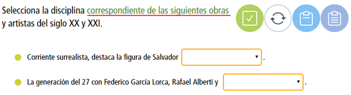
[reorder(display:v):] - Los reorder por defecto aparecen en horizontal, si queremos que los elementos se ordenen de forma vertical hay q utilizar esta clase.
(3,2,1) - Esta nomenclatura, se usa en los ejercicios de reorder, para disponer los elementos en las posición que queramos. Quedaría escrito así: [reorder(display:h):Nacer|Crecer|Reproducirse|Morir(4,3,2,1)]. Si no se utiliza esta clase, los elementos aparecen de forma aleatoria.
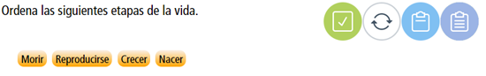
[(whitespace:false):] - Hace que no se tomen en cuenta los espacios cuando se corrige el ejercicio. Un ejemplo sería: [(whitespace:false):1 989], si se escribe como respueta 1989, también será dado por correcto.
[keying(type:textarea,evaluate:false,lines:5):] - Crea una caja de texto para escribir. Es un ejercicio no evaluable. Se puede modificar el alto de la caja de texto, cambiando lines:5, por otro número, por ejemplo: lines:3.
[(maxchar:10):] - Esta clase hace que la respuesta escrita no pueda tener más de 10 caracteres.
[(maxchar:10,width:5em):] - En este caso la respuesta escrita no puede tener más de 10 caracteres y a su vez la zona donde se escribe no va a crecer más de 5em.
{audio.mp3(minified:true)} - Crea un minireproductor en la zona de ejercicio.
[(order:1):], [(order:2):], etc - Esta clase solo funciona en los ejercicios de click y en los facsímiles. Sirve para determinar el orden en el que queremos que se muestren las respuestas.